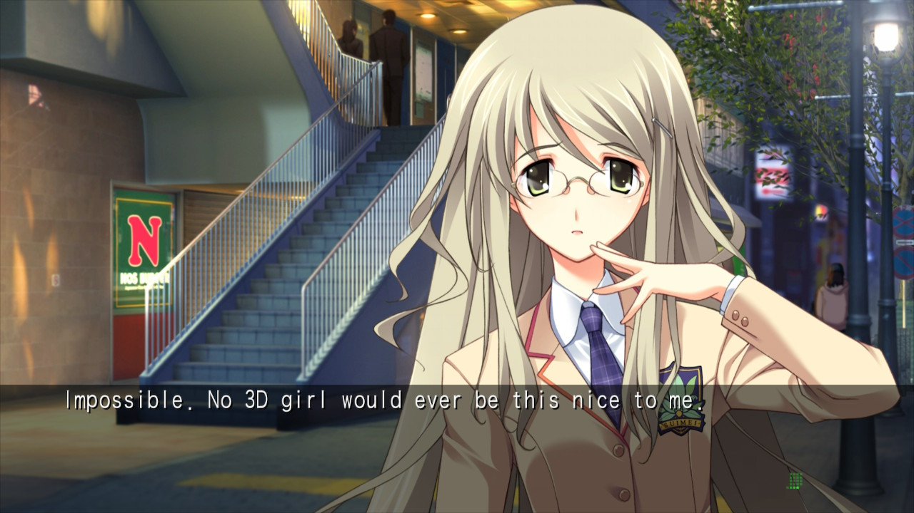
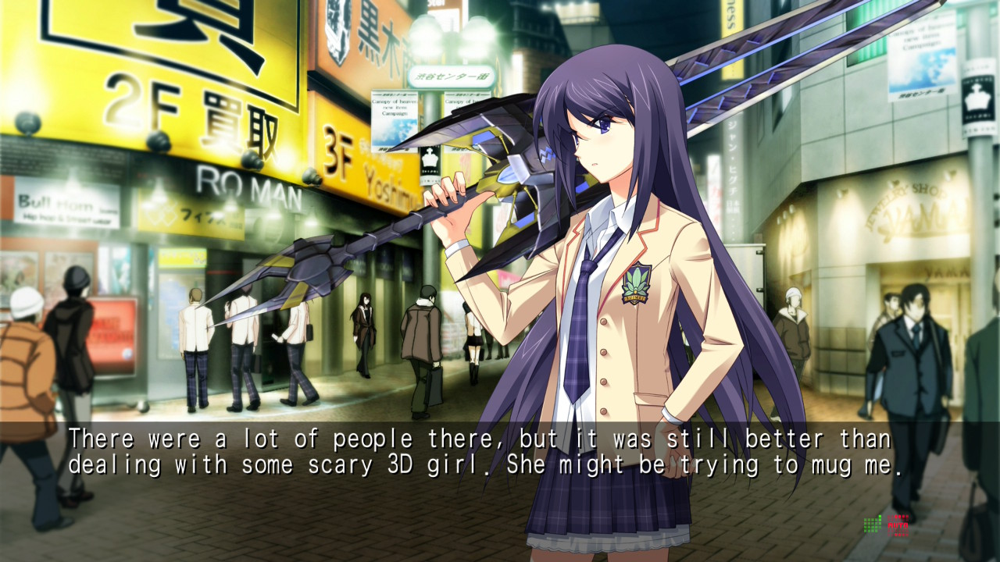
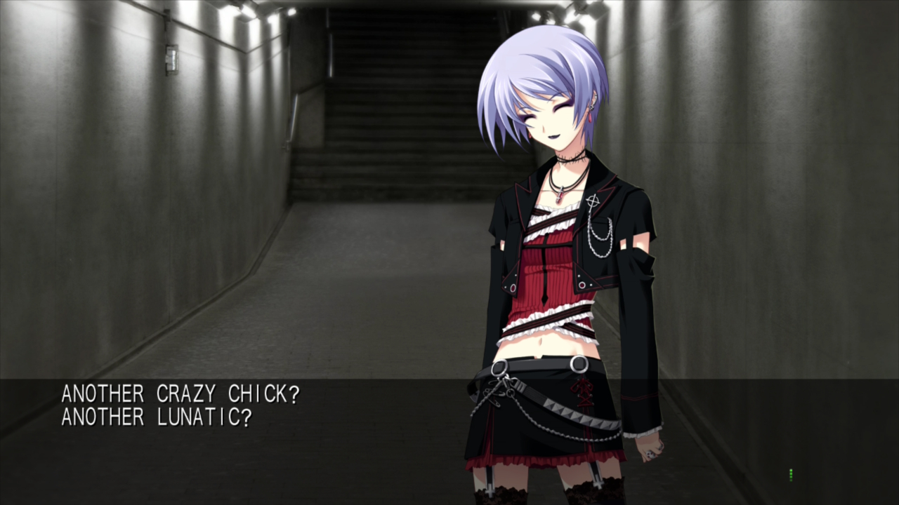
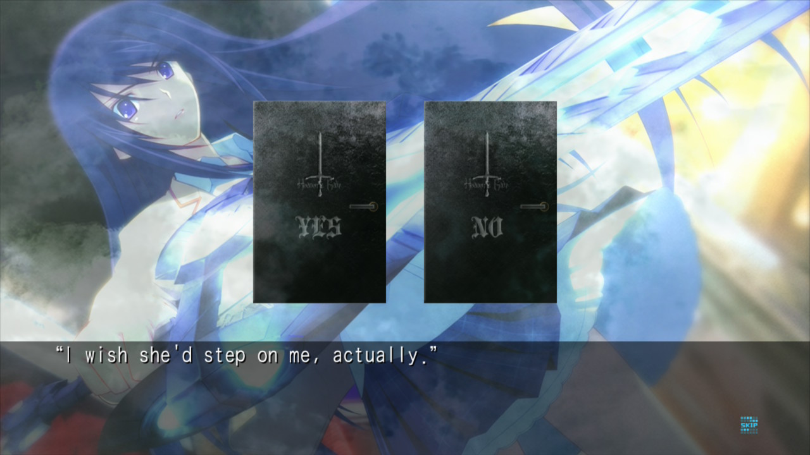

1game1week - Week 27 (7/2/25) - Chaos;Head Noah
Hey all! It's week 27! (7/2 -> 7/9)
You guys are gonna be disappointed... but I broke my streak of no new pickups. I know...
Went to GameStop to pick up Death Stranding 2. I'm a regular there, so I'm always snooping around and seeing if the retro section has anything. Lo and behold, Persona 3 Portable for PSP with a 30 dollar markdown on what market price is.
I thought, "damn, that's the only P3 I need to finish my P3 collection", so I just went for it. Turns out, the day after, GameStop starts doing a buy two get three on pre-owned. The staff is always nice and helps me out so they said they'd be fine with it to "return" P3, and have it be part of the deal.
And... the retro case had Persona 2 in there at a similar 30 dollar markdown. So I thought, "damn, that'd be a crazy pickup at a great price from GameStop of all places in big 2025", and got a free game on top.
So... here we are. At least they'll make for some really good stuff to play. Finally got my hands on both the games of the P2 duology, so I'll probably get started on playing them really soon.
Flipphone saga... is over. I gave in because I got really tired of listening to the radio. There's also pre-existing contacts like the vet, my apartment, etc, that all know my iPhone number and I will not be bothered to change all of them for a month-long bit.
This wasn't a useless endeavor however. Detoxing from social media and my phone is awesome and I'll probably do it more often.
To begin with, I'm uninstalling most things from my phone as well as muting notifications for almost everything (except banking apps and DMs mostly).
All socials except Discord, browsers, etc are no longer allowed. I hope I can hold myself to that. If I can't I could always just buy a new 30 dollar flip phone card, lol.
Anyways!
New games from 6/25 -> 7/1:
Death Stranding 2: On the Beach (PS5)
Persona 3 Portable (PSP)
Multi's Going Out (P/ECE)
Persona 2: Innocent Sin (PSP)
Senran Kagura: Peach Beach Splash (PS4)
Currently, my backlog is at +15 (lower is better, +3 from last week).
And onto 1g1w. Once again, a game is considered "beaten" if I've accomplished the main objective of the game.
GAME: Chaos;Head Noah
PLATFORM: Nintendo Switch
GENRE: Visual Novel
STARTED ON: 5/8
BEATEN ON: 6/20
TOTAL PLAYTIME: 44 hours and 51 minutes (tracked via in-game time minus starting time from previous time starting it)
Was talking to my friend Billy about this game recently. I noted that it was really interesting that a lot of visual novel protagonists (at least, the ones I've read) have been mostly heroic, or fearless, or [insert any masculine-adjecent attribute here].
Takumi Nishijo, this game's protagonist, is, as accurately described in the game, "a wimp... and an otaku... and [does] nothing but collect anime dolls...". There were several moments in the game that made me crack up and think, "wow, someone like Shirou never would've done that".
One of the heroines, Kozupii, falls down the stairs. Despite acknowledging it was a "very H-game" scenario, Takumi thinks to himself "no I'm scared of 3D girls" and runs off without helping.
Even in the face of various adversities all he can really think about is 2D girls and that made it such a fun experience to me. Being able to read this guy's internal dialogue was so unbelieveably funny he singlehandedly made the serious narrative better by being such a stark contrast to the overall picture.

The game features what are known as "delusion triggers". You're able to experience different versions of a particular scene- one neutral, one positive, and one negative. In the first run through, they don't hold much particular meaning. In any sub-sequent run through, they're essentially what puts you down into specific routes.
I didn't really get it at first until I accidentally touched one of the actual triggers on my controller. Delusion "triggers" really was literal.

I ended up going for all of the game's endings. You need to do so to get the true ending anyway. As much as I legitimately would've loved to read through this game nine times, after my first run through I ended up just skipping through stuff and not hesitating much to use a guide to get the delusion triggers necessary for each ending- or it really would've been a lot longer to get through than other games, and that's putting it rather mildly.

I enjoyed this game very much. It had a solid, very interesting and engaging narrative, a phenomenal soundtrack, a great cast, and an incredibly fun-to-read narrator. There were so many fun Takumi moments in this novel that I'm struggling to select the ones I like the best to include as screenshots here. This is part of (more accurately, kicked off) the Science;Adventure series. Maybe it'd be simple to say it's Steins;Gate's older sibling. This series weaves in various concepts in actual science, some "plausible" pseudo-science, and some definitely fictional stuff for its narrative.
As a side note... this is very much not a game I'd recommend playing in public spaces. I unfortunately made that mistake in 2023 and put down the game for a while.
Having Seira-tan onscreen at any point while in a very crowded airport made me fear for my dignity.

In other news, I've been made aware that it's actually the main heroine's birthday, 7/3. By the time I'm uploading this, it's already that day in Japan, so... happy birthday to the GOAT Sakihata Rimi!
Before signing off, I wanted to note something that bothered me throughout the entire duration of the novel... if Takumi lives in a metal storage container in the middle of Shibuya with probably very poor airflow, notably terrible cleaning habits, and enjoys looking at scantily clad 2D women all day, how does he get rid of the smell...? Moreover, how are several women in the story able to enter the trash and H-game-filled storage container without commenting on it...? Maybe all that was just a delusion, too.

Thanks for reading! If you need to contact me for any reason, please feel free to email me at aru@hoshikawa-aru.com.